Taj Mahal
Known For It's Beauty AT Dawn
Introduction
The Taj Mahal (/ˌtɑːdʒ məˈhɑːl, ˌtɑːʒ -/ TAHJ mə-HAHL, TAHZH -, Hindi: [taːdʒ ˈmɛɦ(ɛ)l]; lit. 'Crown of the Palace') is an ivory-white marble mausoleum on the right bank of the river Yamuna in Agra, Uttar Pradesh, India. It was commissioned in 1631 by the fifth Mughal emperor, Shah Jahan (r. 1628–1658) to house the tomb of his beloved wife, Mumtaz Mahal; it also houses the tomb of Shah Jahan himself.
.......
s
Myths
Ever since its construction, the building has been the source of an admiration transcending culture and geography, and so personal and emotional responses have consistently eclipsed scholastic appraisals of the monument.[88] A longstanding myth holds that Shah Jahan planned a mausoleum to be built in black marble as a Black Taj Mahal across the Yamuna river.The idea originates from fanciful writings of
.......
s
Etymology
The name "Taj Mahal" is of Urdu origin, and believed to be derived from Arabic and Persian, with the words tāj mahall meaning "crown" (tāj) "palace" (mahall). Abdul Hamid Lahori, in his book from 1636 Padshahnama, refers to the Taj Mahal as rauza-i munawwara, meaning the illumined or illustrious tomb. The name "Taj" might have been derived from the corruption of the second syllable of "Mumtaz".
Inspiration
The Taj Mahal was commissioned by Shah Jahan in 1631, to be built in the memory of his wife Mumtaz Mahal, who died on 17 June that year while giving birth to their 14th child, Gauhara Begum.[10][11] Construction started in 1632, and the mausoleum was completed in 1648, while the surrounding buildings and garden were finished five years later.The imperial court documenting Shah Jahan's grief after the death of Mumtaz Mahal.
Symbolism
Due to the global attention that it has received and the millions of visitors it attracts, the Taj Mahal has become a prominent image that is associated with India, and in this way has become a symbol of India itself.[73] Along with being a renowned symbol of love, the Taj Mahal is also a symbol of Shah Jahan's wealth and power, and the fact that the empire had prospered under his rule.
 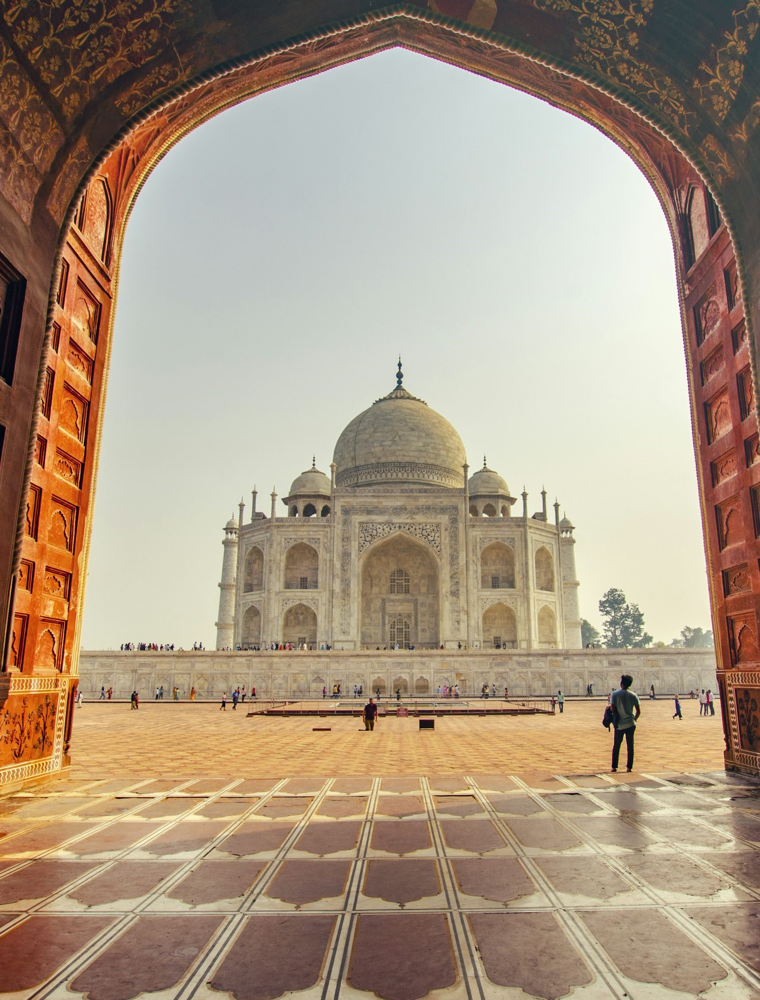
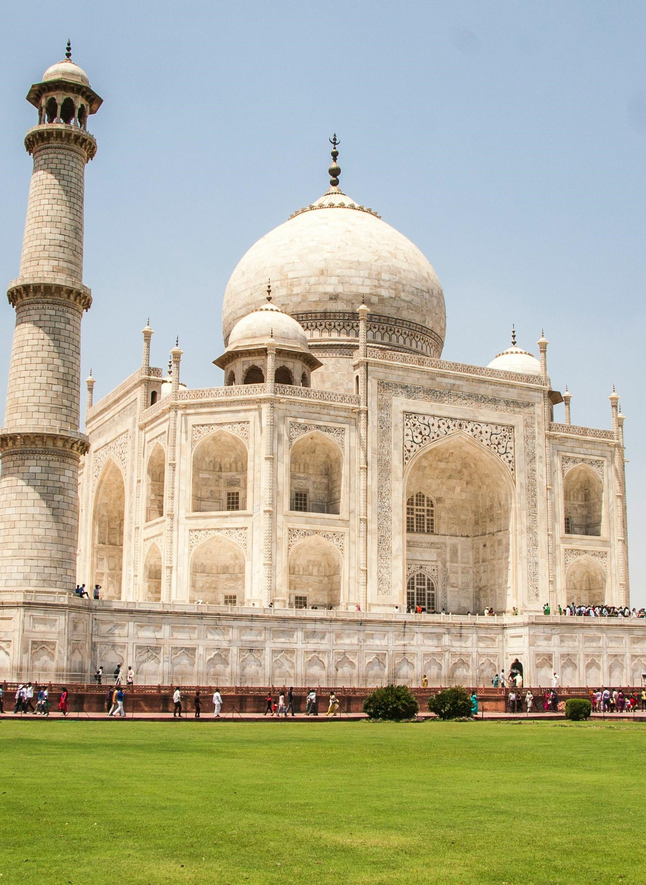
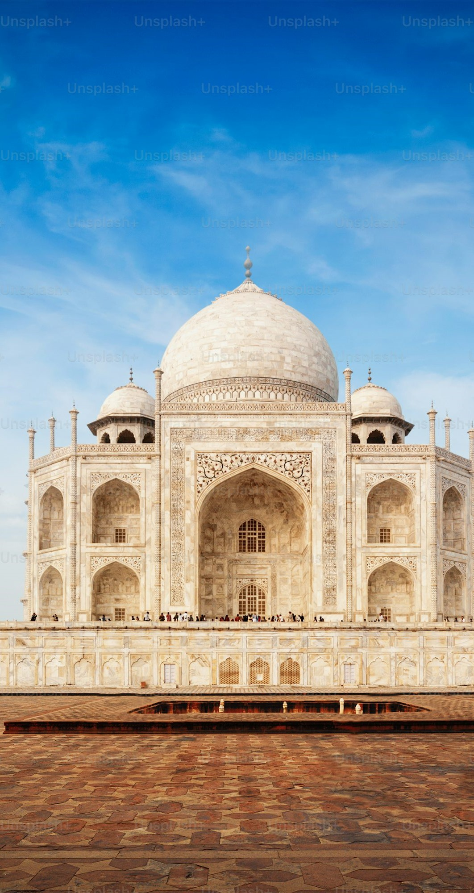
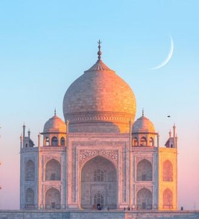
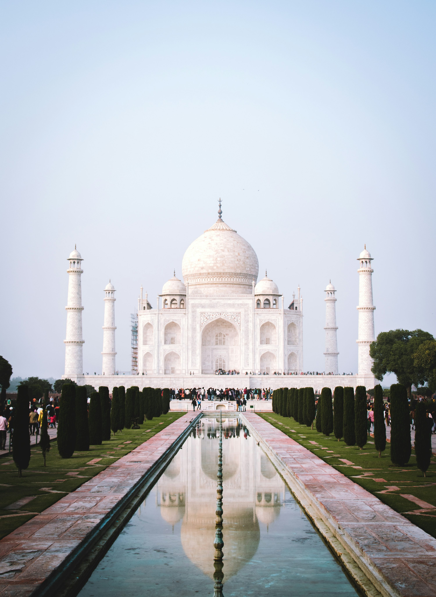
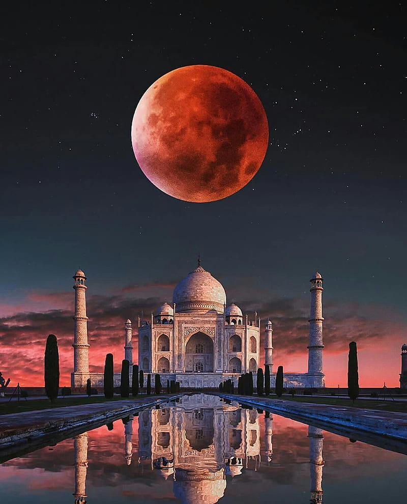
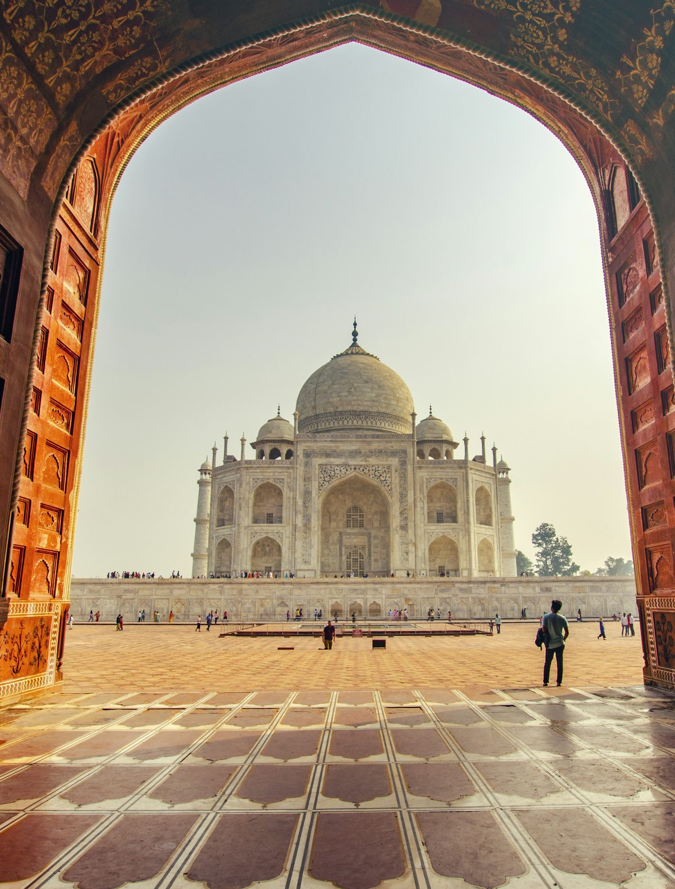
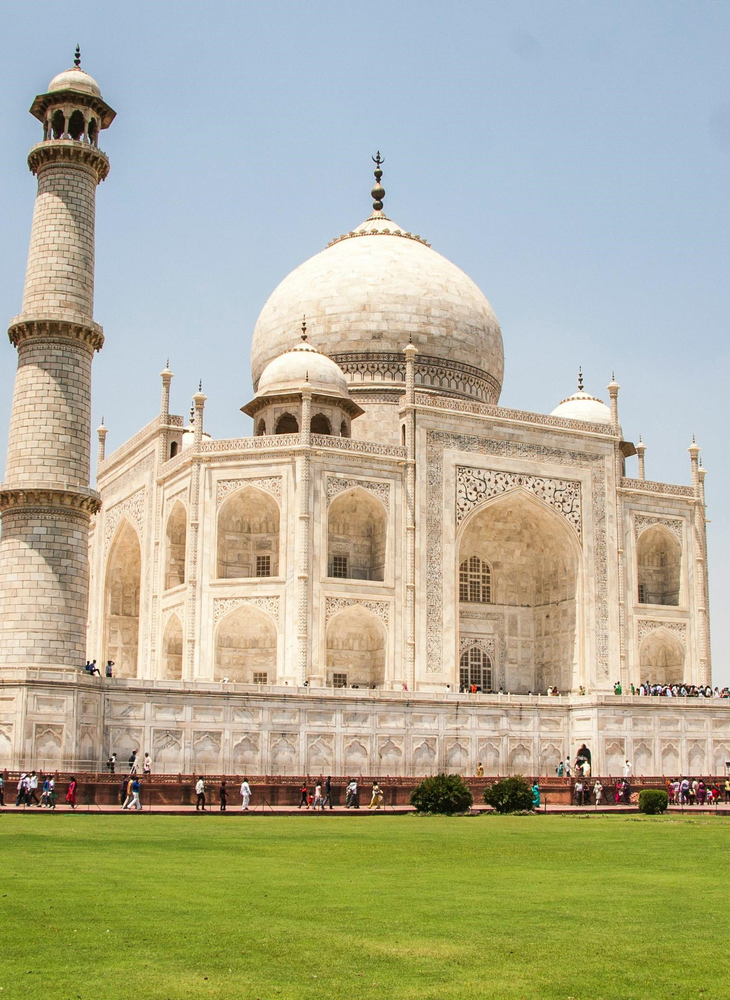
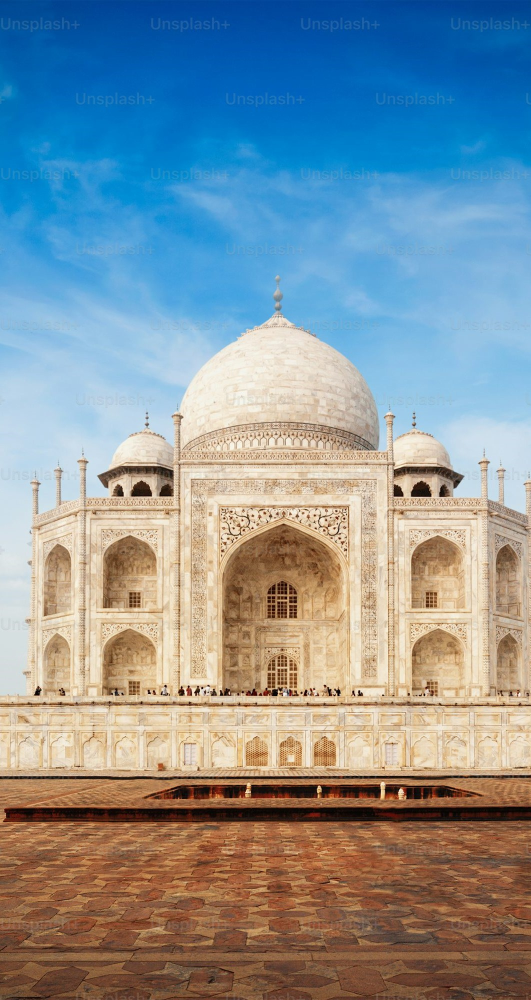
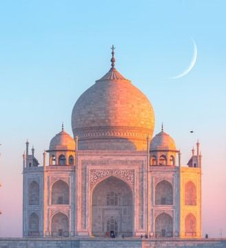
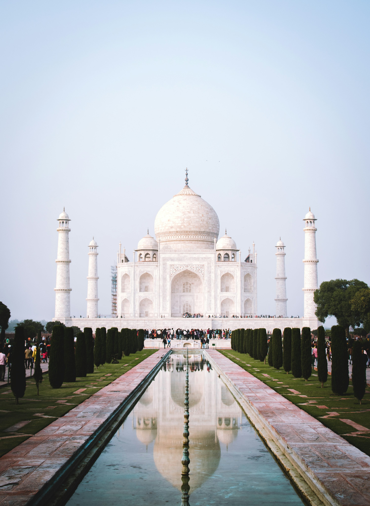
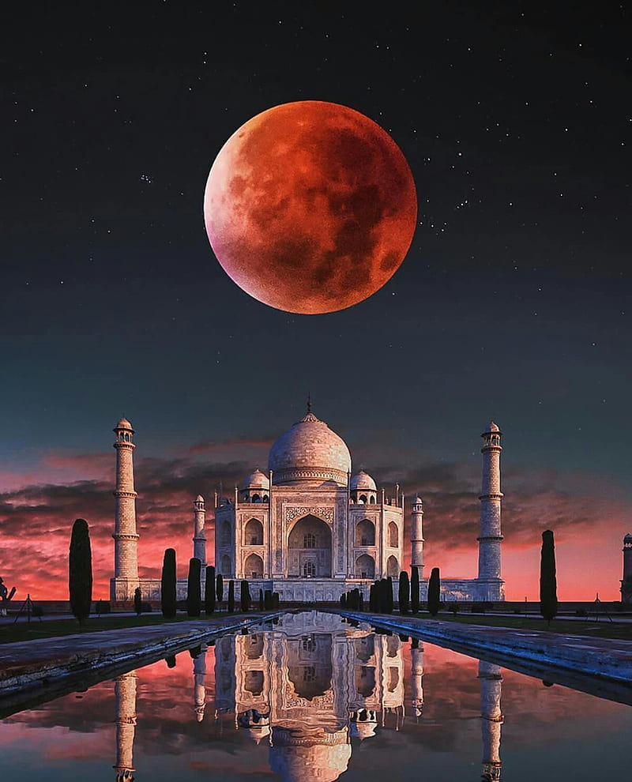